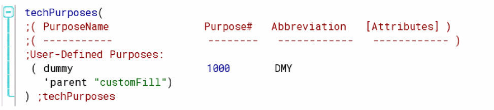
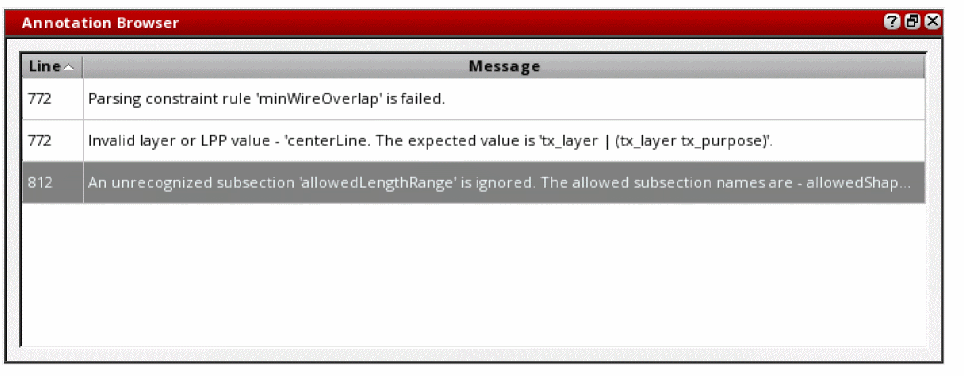

5
Editing, Reusing, and Merging Technology File Data
This chapter discusses the following:
- Updating Technology Files and Technology Libraries
- The Techfile IDE
- Reusing Technology Data to Build a New Technology Library
- Loading Technology Data into Virtual Memory
- Discarding an Edited Technology Database from Virtual Memory
- Saving a Technology Library Edited in Virtual Memory to Disk
Updating Technology Files and Technology Libraries
You can create and update technology files in one of the following ways:
- By using the Techfile IDE, which is recommended.
- By using a text editor.
- By dumping an ASCII technology file from an existing technology library.
You can use the following methods to edit an existing technology database:
- Edit an ASCII file in a text editor and use the Technology File – Load command to compile and load it into virtual memory, either merging it with the technology data already in virtual memory or replacing the technology data already in virtual memory with it.
- Use SKILL functions to load a binary technology file and update it in memory.
Technology data changed in virtual memory can be used during a design session without changing the original technology database saved on disk. If you want to save changes permanently,
The Techfile IDE
The Virtuoso platform relies on proper technology information. At advanced nodes, more and more constraints need to be captured in technology files. More importantly, they need to be grouped correctly within constraint groups. When done manually, capturing this data is a cumbersome, error-prone, and time-consuming process. Moreover, the amount of text involved cannot be handled efficiently by conventional text editors, especially when complex tables are involved.
The Techfile IDE makes it easier for you to understand, write, and modify ASCII technology files, particularly constraints. It also helps you visualize the organization of constraints in constraint groups in a compiled technology database.
For more information about the syntax of the ASCII technology file, see Virtuoso Technology Data ASCII Files Reference.
For generic information about the IDE, which is based on the Cadence SKILL IDE, see Cadence SKILL IDE User Guide.
This section presents specific information about the Techfile IDE and contains the following topics:
- Starting the Techfile IDE
- Creating a Technology File
- Navigating through a Technology File
- Editing a Technology File
- Working with the Rule Editor
- Checking a File for Errors
- Loading a Technology File into a Technology Library
Starting the Techfile IDE
To start the Techfile IDE, use one of the following options:
-
At a terminal, type the following command:
$>
You can also open multiple technology files together, for example, as follows:virtuoso –techidetechnology_file_name$>
virtuoso -techide file1.tf file2.tf file3.tf & -
In the CIW:
-
Choose Tools – Technology File Manager.
The Technology File Manager window appears. -
Click Edit Techfile.
Alternatively, to create a technology file from a technology library, click Dump.
In the Dump Technology File form that appears, select the Open in Techfile IDE check box.
-
Choose Tools – Technology File Manager.
- Use the tfEditTechfile SKILL function.
The Techfile IDE window opens, showing either a blank technology file or a specified one.
For detailed information about various elements of the UI and how to customize them, see Cadence SKILL IDE User Guide. This section presents only features that are specific to technology files.
When a technology file is open, the Techfile IDE window appears as follows.
The most important elements of the interface are briefly described as follows:
- Navigator: An assistant that shows a hierarchical list of the contents of the technology file. The entries at the primary level are constraint groups and those at the secondary level are types of constraints. You can click a node or leaf to jump to it in the editor. See “Navigating through a Technology File”.
- Text Editor: The main window in the center. You can work with it by typing in it or using the Edit menu or the contextual menu, which appears when you right-click the window. It has several additional features. See “Editing a Technology File”.
- Rule Editor: An assistant that presents parameters and values for a selected constraint in a form. You can update the rule in this window without having to consider the nuances of syntax and formatting. See “Working with the Rule Editor”.
- Annotation Browser: An assistant that lists syntax errors identified in the active technology file after it is checked for errors. See “Checking a File for Errors”.
tfEditTechfile
tfEditTechfile(l_fileListt_application=> t / nil
Description
Starts the Techfile IDE in a standalone mode.
Arguments
Value Returned
Example
Opens the three technology files specified in separate tabs in the Techfile IDE.
tfEditTechfile( ?fileList list("test1.tf" "test2.tf" "test3.tf") ?application nil) => t
Creating a Technology File
To create a new ASCII technology file:
-
Choose File – New.
A new file namedDocument_n is opened. Here, n is a number that is incremented each time you create a new file using this option.
Optionally, choose File – Open. Then, select a technology file that you want to modify. You can select any other valid technology file or the sample ASCII technology file in the Cadence installation folder. -
Enter text or modify it, as required. See the remaining topics in this section for more details.
Ensure that you follow the structure of and requirements for specifying ASCII technology file data as described in Virtuoso Technology Data ASCII Files Reference.
See “Navigating through a Technology File” for information about viewing various sections of the file.
While entering or modifying constraints, the Rule Editor provides an easy way to enter details and visualize them. See “Working with the Rule Editor”. -
Check the file for errors.
See “Checking a File for Errors”. - Optionally, to undo changes edit by edit, choose Edit – Undo. To discard all edits, choose File – Discard Edits.
-
Choose File – Refresh to re-parse the file.
The Navigator panel appears enabled again with its contents refreshed. -
Choose File – Save As to save the data into a filename of your choice.
Alternatively, choose Save to save the file by the same name. - Optionally, to make the file read-only, choose File – Make Read Only.
- Choose File – Close.
Navigating through a Technology File
A technology file is usually a very large document. Navigating back and forth through it can be tedious with simple text editors. The Techfile IDE offers several ways to navigate efficiently through technology files.
To navigate through a technology file, use one of these options:
-
Choose a node in the Navigator assistant to jump to the related part of the file in the text editor.
Every header section in the technology file and constraint groups are represented by a node in the Navigator assistant. The tree does not include details such as individual layers, vias, and constraints. The section where the pointer is currently positioned is highlighted.
-
Find text quickly by typing it in the search window on the toolbar and clicking the Search buttons next to it.
-
Choose Edit – Find/Replace to open the Find and Replace form and use the options available to find and replace text.
-
When a parenthesis is selected, the matching parenthesis also appears selected.
For a large segment, where both parentheses might not be in the same view, select a parenthesis and choose Edit – Go to Matching Parenthesis to jump to the matching parenthesis.
To jump to the preceding outer parenthesis, pressCtrl+]. To jump to the next inner parenthesis, pressCtrl+[.
Editing a Technology File
The Edit menu offers standard options to work with the text in a technology file. These include Cut, Copy, Paste, Select All, Undo, and Redo.
Unlike conventional text editors, the Techfile IDE offers several other useful features that help you work more efficiently with technology files. This section describes these features and how to work with them.
Setting Options
The Options form helps you set generic editor options and color options in the text editor.
-
Choose Options – Editor or Color Settings.
-
Set options as required.
These options are described in subsequent topics. - Close the form.
The changes that you make persist across sessions.
Working with the Outline View
The Outline view helps you collapse and expand parts of a technology file. It helps you focus on the segments that you want to work with.
The outline is marked in turquoise and the contents are collapsed by default, as indicated by the plus icons. You can expand a segment by clicking the plus icon or the ellipsis in the box next to the visible word of the segment.
To expand all segments of the file with one action:
By default, the Outline view does not collapse or expand individual constraints or groups. To enable the outline for a single constraint:
-
Double-click the text just before the opening parenthesis, for example,
techPurposes, in the following screenshot.

You can collapse a segment by clicking the toggle minus icon in the margin.
Showing Line Numbers
To display line numbers in the editor:
-
Choose Options – Editor.
The Options form opens with the Editor tab displayed. - Select Show Line Number.
Line numbers appear in the margin to the left.
Highlighting Matching Text
To highlight matching text in a technology file:
When a string is selected in the text editor, matching strings appear highlighted.
Enabling Name Completion
To enable name completion while typing in the editor:
While typing the name of a constraint, a list appears with matching names. You can select a name rather than type it out.
Applying Indentation and Tab Spaces
To apply indentation automatically:
To insert white spaces for each Tab press:
To specify the number of characters by which the cursor moves with each Tab press:
Modifying Fonts
- Choose Options – Editor.
- Specify a value in the Font Size field.
- Select a value in the Font Style field.
Modifying Colors
A technology file opened in the editor uses colors to visually distinguish between different types of information.
-
Choose Options – Color Settings.
The Options form opens with the Color tab displayed.
-
Select an option from the Set color list, for example Mismatching Bracket, and set a color for it, as required.
Text does not reflect its color assignment when you type a keyword that is not recognized by the editor, for example the misspelled word layerDefinitons in the illustration on the right below is not blue. This provides a visual indication that the keyword has been typed incorrectly.
Working with the Rule Editor
The Rule Editor displays a selected constraint or statement in a separate window, in which you can work more easily because you do not need to manually format any of the text.
All constraints and these statements are supported by the Rule Editor: techPurposes, techLayers, techLayerPurposePriorities, techDisplays, and techDerivedLayers.
In the following screenshot, the techDisplays statement is selected in the text editor and its parameters and values are shown in the Rule Editor.
In the following screenshot, the allowedLengthRanges constraint is selected.
Some features of the Rule Editor are briefly mentioned as follows. Other features are described in detail in subsequent topics.
-
All parameters possible for a constraint or statement are shown by default, and the All radio button appears selected.
You can select Used Only to view parameters that are currently used for a constraint. This is a read-only view. -
Mandatory parameters, such as
Layerin this case, are marked by asterisks. -
Positional parameters, where a parameter is indicated only by its position on a row in the file, are sequenced accordingly in the Rule Editor.

- Parameters that can have only a limited number of values have drop-down lists from which you can select a value.
-
Parameter nesting is shown using indentation, for example, Outside Purposes is nested in Outside Layers. Nested parameters are not shown unless the parent parameter is selected or populated with a value. When a value is selected, the nested parameters pertinent to the selected value are shown.
-
Related parameters can be collapsed or expanded by using the arrow buttons indicated.
-
A selected value in the text editor appears cross-highlighted with a box outline in the Rule Editor.
When you select a value in the Rule Editor, it appears highlighted in the text editor.
When you select a table index value in the Rule Editor, all related values appear highlighted in the text editor.
When you change a value, it appears highlighted in the text editor, which draws your attention so you can check your changes before moving the pointer away.
The highlighting disappears when you move the pointer to another part of the file.
Modifying Tables in the Rule Editor
Tabular information in a technology file is effectively represented using tables in the Rule Editor. You can further modify such tables by typing directly in the table for convenience.
You can type directly into a table to make any changes. Additionally, the context menu, which appears when you right-click a table, offers the following options:
- Cut, copy, paste, or delete values
- Insert columns to the right or left of a selected column
- Insert rows above or below a selected row
-
Delete selected columns or rows
When you insert a column between columns or a row between rows, an interpolated value that is exactly between the values in adjacent header cells populates the index cell by default.
When you append a row or column at the beginning or the end of a table, a value incremented by 0.01 populates the index cell by default.
Checking a File for Errors
Having made changes in a technology file, you can check it for syntax and consistency errors by using one of the following operations:
- Choose File – Check to check the file for errors.
- Choose File – Check and Save to save changes if no errors are reported during checking. If errors are found, a message appears indicating the presence of errors and seeking confirmation before saving the file.
The Techfile IDE flags errors in three ways:
-
The text editor pane shows a red icon in the margin and highlights the line with the error. When you poise the pointer over the icon, a tooltip appears describing the error.
-
The message appears in the Annotation Browser, which also lists other errors in the file, including line numbers in a sortable column.
To view a line that has an error, click the row in the Annotation Browser. -
The CIW lists warning messages.
Loading a Technology File into a Technology Library
To make the technology file available in the database, load it into an existing Virtuoso library as follows:
-
Select a library from the list of accessible libraries in the Technology File combo box on the toolbar.
- Click the adjacent Load Technology File button.
The technology file in the editor is loaded into the selected library. If the library already contains a technology database, it is fully replaced.
If you want to merge changes to a technology database or load the technology file into a new library, use the Load button in the Technology File Manager. For more information, see Merging New ASCII Technology Data into an Existing Technology Library.
Environment Variables for the Techfile IDE
The .cdsenv file located at tools/dfII/etc/tools/techfileIDE includes the following environment variables, which support the Techfile IDE.
Reusing Technology Data to Build a New Technology Library
This section discusses the following topics:
- Creating an ASCII technology file from a technology library
- Copying a technology library to use as a basis for creating a new technology library
Creating an ASCII File from a Technology Library to Edit and Load Changes
To obtain a writable ASCII technology file, you can dump all or a portion of a technology database to an ASCII technology file. You can dump only the local technology database, not the effective technology database.
-
It does not contain comments identified by semicolons (
;) that were in the original ASCII file, although it does contain comments made with thecommentstatement. -
It contains all of the data from originally included files and no
includestatements. - It contains any changes made in virtual memory and saved to disk during design sessions.
There are the following reasons where the dump ASCII technology file is different from the original ASCII technology file:
-
The original technology file has system reserved layer:
In the IC610 release, every single
techLibbecame an ITDB where techLib inherits the system reserved layers and other system specific information fromcdsDefTechLiband technology file load ignores this information from ASCII technology file. Therefore, when the technology file is dumped again following the standard ITDB convention, only the top level techLib which does not have the system reserved info is dumped back. - The original technology file has a spacingTable in which all the rule value for all the indexes of the table are not explicitly specified. Let's consider the example given below:
( minNumCut "Via8" (( "width" nil nil ) 1 ) ( 0.5 2 1.0 4 ) )
) ;spacingTables
( minNumCut "Via8" (( "width" nil nil ) 1 )] ( 0.36 1 0.5 2 1.0 4 ) )
) ;spacingTables
In this case the minWidth of Via8 layer is 0.36 but the minNumCut rule does not explicitly specify how many cuts should be used when the width is 0.36. Therefore, the technology file loader estimates this rule and puts it into the techLib, which then gets dumped in the ASCII technology file.
To create an ASCII technology file from a technology library, do the following:
-
From the Technology File Manager, choose Dump.
The Dump Technology File form appears.
For a description of this form, see Appendix A. - From the Technology Library cyclic field, select the library from which to dump the technology file.
-
Select the sections of the technology file that you want to dump.
Select Select All to dump all sections. -
In the ASCII Technology File field, type the name of the ASCII file that you want to create.It is safest to specify a new ASCII technology filename rather than overwrite an existing technology file. An ASCII file produced with the Dump command does not contain any of the comments or SKILL programs that your original file might contain. You might need the original ASCII technology file later.
- By default, the technology file opens in the configured text editor. Select the Open in Techfile IDE check box to open the file in the user-friendly Techfile IDE.
-
Click OK.
The ASCII file opens in a shell window. You can edit this file.
For more information about the syntax of the technology file, see the Virtuoso Technology Data ASCII Files Reference.
After editing the ASCII file, you can compile and load it into the technology database in virtual memory, choosing either to merge it with the current technology database or to replace the current technology database with the new data. (For information on loading the technology file and merging its technology data with the technology data already in the technology library in virtual memory, see “Merging New ASCII Technology Data into an Existing Technology Library”. For information on loading the technology file and replacing the technology data in the technology library in virtual memory with the new technology file data, see “Replacing Existing Technology Data in a Technology Library”.) Then, if necessary, copy the changes in the ASCII file to your original annotated ASCII technology file.
Copying a Technology Library to Use As a Basis for Creating a New Technology Library
You can copy an entire technology library to use as a basis for creating a new technology library. To do so, perform the following steps:
-
From the Technology File Manager, choose New.
The New Technology Library form appears.
For a description of this form, see Appendix A. - Turn on the Copy From Existing Technology Library radio button.
- From the Copy From Existing Technology Library list box, choose the technology library to copy.
- In the Technology Library Name field, type the path and name of the technology library to create. (You can navigate your directory structure in the Directory list box.)
-
Click Apply or OK.
The software creates a copy of the selected technology library in the specified directory. You can dump, edit, and recompile an ASCII technology file to alter the technology library or you can edit technology data in virtual memory.
Loading Technology Data into Virtual Memory
This section explains how to load data into virtual memory in two ways. With the Technology File – Load command, you can merge technology data defined in an ASCII technology file with the technology data already in the technology database in virtual memory or you can replace the technology database in virtual memory with different technology data defined in a technology file.
There are occasions when you must load your technology database into the most recent version of the OpenAccess Data Model. In these situations, the technology database is uprevved to the later version when read into virtual memory.
During your editing session you can save the technology database to disk at any time. All of the edits are done in the later Data Model version and the output information reflects the new version number. If you do not save during the session, you are asked if you want to save at exit.
In the event that the same technology database is opened by multiple users at the same time, the first user to open it, with write privileges, will obtain a writable copy of the technology database in VM, and is given the option to save the technology for that session.
All other users are informed that their (up-revved in VM) copy of the technology database is not writable at that time even though they have write permission to the technology database.
For technology databases that do not have write permission, a warning is displayed.
DataModel Version Considerations
For a technology database with an OpenAccess Data Model (DM) version less than DM3, the technology database is revised up to DM3 in virtual memory (VM) because the relationship between the referenced technology database cdsDefTechLib and the technology database is set when the technology database is open in VM.
This reference relationship between the technology database and the cdsDefTechLib is not retained after a save to disk. This means that the saved technology database does not contain DM3 data even though the reference relationship in VM is still active.
While working in VM in the DM3 version, a message appears in the CIW similar to the following:
\o INFO (TECH-150003): The technology database "tech1" has been automatically
\o updated from revision 223500(DM 0) to revision 226610(DM 3)
\o in virtual memory. It will be opened in 'a' mode for you to save it to disk.
Upon saving and querying the database using cdsPrintOAFeatures, it is confirmed that the DM version is not DM3:
cdsPrintOAFeatures -lib tech1
Data model revision of tech tech1: DM0
Merging New ASCII Technology Data into an Existing Technology Library
You can define new or edited technology data in an ASCII technology file and then merge that data with an existing technology library by compiling and loading the new technology file according to the following steps (refer to “Replacing Existing Technology Data in a Technology Library” for information on replacing the technology library). Merging new technology data does not alter existing technology file data that is not specified in the ASCII technology file being merged into the technology library.
-
From the Technology File Manager, choose Load.
The Load Technology File form appears.
For a description of this form, see Appendix A. - In the ASCII Technology File field, type the name of the ASCII technology file you want to compile and load.
-
Click the sections you want to compile and load from the ASCII technology file.
To load all sections, click Select All. - From the Technology Library cyclic field, choose the technology library into which you want to compile and load the ASCII technology file data.
-
Click Merge.
-
Click OK.
The software compiles the technology file and loads it into virtual memory. If your ASCII file does not contain all of the sections you chose, a dialog box appears listing the missing sections. Click OK to continue or Cancel to quit.
For information about when each section is compiled and when the process is finished, look for messages in the DFII CIW and in the techManager.log file. For example:
Compiling class ‘layerDefinitions’....
Compiling class ‘layerRules’....
Compiling class ‘constraintGroups’....
Technology file ‘~/xyz.tf’ loaded successfully.
Replacing Existing Technology Data in a Technology Library
You can define new or edited technology data in an ASCII technology file and then replace an existing technology library by compiling and loading the new technology file according to the following steps (refer to “Merging New ASCII Technology Data into an Existing Technology Library” for information on merging the technology data with the existing technology library). Loading in replace mode removes existing technology data that is not specified in the ASCII technology file being loaded to replace the technology library. Loading in replace mode replaces the entire database with the data specified in the ASCII technology file; any data not specified in the technology file but in the existing library is deleted from the library.
-
From the Technology File Manager, choose Load.
The Load Technology File form appears.
For a description of this form, see Appendix A. - In the ASCII Technology file field, type the name of the ASCII technology file you want to compile and load.
-
Click the sections you want to compile and load from the ASCII technology file.
To load all sections, click Select All. - From the Technology Library cyclic field, choose the technology library into which you want to compile and load the ASCII technology file data.
-
Click Replace.
-
Click OK.
The software compiles the technology file and loads it into virtual memory. If your ASCII file does not contain all of the sections you chose, a dialog box appears listing the missing sections. Click OK to continue or Cancel to quit.
For information about when each section is compiled and when the process is finished, look for messages in the DFII CIW and in the techManager.log file. For example:
Compiling class ‘layerDefinitions’....
Compiling class ‘layerRules’....
Compiling class ‘constraintGroups’....
Compiling class ‘viaDefs’....
Technology file ‘~/design1.tf’ loaded successfully.
Discarding an Edited Technology Database from Virtual Memory
If you have
-
From the Technology File Manager, choose Discard.
The Discard Edits To Technology File form appears.
For a description of this form, see Appendix A. - In the Technology Library cyclic field, choose the library from which to discard your edits.
-
Click OK.
The Discard Edits dialog box appears, asking you to confirm the discard and reload the data saved on disk.
-
Click Yes.
The technology library on disk is loaded into virtual memory, deleting any changes you made since you last saved.
A message in the DFII CIW and in thetechManager.logfile indicates that the command was successful.Technology file ‘cellTechLib’ was restored successfully.
Saving a Technology Library Edited in Virtual Memory to Disk
To permanently save changes to a technology library edited in virtual memory, you must save the library to disk.
-
From the Technology File Manager, choose Save.
The Save Technology File form appears.
For a description of this form, see Appendix A. - From the Technology Library cyclic field, choose the library to save.
-
Click OK.
A dialog box appears, asking you to confirm the save to disk. Click Yes. The technology library in virtual memory is saved to disk.
Message boxes appear if you change technology data and then try to do anything that will cause you to lose those changes if you do not save them. For example, when you quit the software or apply layer display changes. The message boxes give you the opportunity to save the changes or to proceed without saving.
For example, If you try to exit the software without saving your changes, the message box shown below is displayed:
Return to top